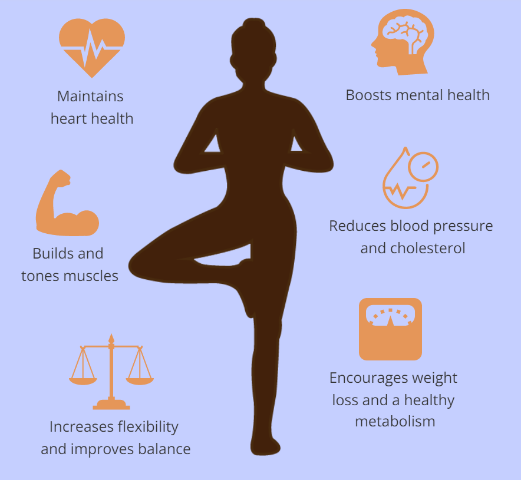

The literal translation of the word “yoga,” which is from Sanskrit (recognized as the original language of yoga) is “union,” says Sherwin.right up arrow And that’s an apt way to describe yoga as we know it today, she says. “We define it as bringing together the mind and the body by use of the breath.” Many people have come to know the physical benefits of yoga and think of it as a type of workout, says Sherwin. But yoga is way more than that. “It’s really an entire lifestyle; the postures are only one piece of it,” she says.Yoga began in India and has been around for about 5,000 years, says Sherwin. “Originally it was taught one-on-one and only to men of the highest caste,” she says.
Yoga is thought to have first come to the United States at the end of the 19th century and beginning of the 20th. One critical moment was when Swami Vivekananda spoke at the World Parliament of Religions in Chicago in 1893. Another milestone in yoga’s spread in the West was Paramahansa Yogananda’s book, Autobiography of a Yogi, published in 1946 and still read by many yoga students, Sherwin says. In the first half of the 20th century, it was more common for yoga instructors to travel from city to city to teach a yoga class or give a yoga lecture rather than teach in a studio (as is the case today).right up arrow
“The benefits of yoga are different for different people,” Laskowski says. “Overall, it has components that can help with flexibility, strength, balance, and stability.” Research has shown it can also help with specific measures of health, like eating habits, weight loss and weight loss maintenance, and cardiovascular health.right up arrow
Vinyasa yoga is one of the most popular kinds of yoga in the United States, says Jen Fleming, a yoga teacher and manager at YogaWorks in Atlanta, who is certified by Yoga Alliance. Although vinyasa can be a set sequence of poses that never changes, as in ashtanga vinyasa, flow vinyasa classes will be different every time, she says. Different styles of vinyasa yoga also include power yoga, Baptiste yoga, Jivamukti, and prana flow. These kinds of classes are among the most athletic and physically challenging, says Fleming. It can be difficult to keep up with the pace of a vinyasa class if you don’t have yoga experience, adds Shala Worsley, a yoga instructor at Asheville Yoga Center in Asheville, North Carolina, who is certified by Yoga Alliance. “If you want to try vinyasa yoga and you don’t have much experience, try to find a studio that offers a beginner or a slow flow class,” says Worsley.
In hot yoga, the room is heated to temperatures that can range from the high 80s to 105 degrees F, on average.right up arrow Not only can the temperature fluctuate depending on the studio (check the class description or call the individual studio to find out details), but the method of heating can be different as well, says Scupp. Along with conventional heating, some studios use a humidifier to make the room feel warmer. Some studios, like Heatwise, use infrared heat that comes from electric heat panels that are placed on the ceiling or around the room, which can feel more natural than forced-air heat, she says. The size of the room, the weather outside, and how packed the class is can all be factors in how hot the room gets, Scupp says.
Hatha yoga (pronounced HAH-ta, not -tha) encompasses several types of yoga, including ashtanga, vinyasa, and power yoga. Hatha classes tend to be slower-paced than vinyasa classes, and may not necessarily flow from pose to pose, says Fleming. Poses are typically held for several breaths before another pose begins. What is consistent across different types of hatha yoga is that the physical poses and postures are meant to be linked to your breathing patterns.
Kundalini yoga combines postures, breathing, meditation, and the chanting of mantras. Traditionally, kundalini yoga is meant to “awaken” the different energies inside each of us and heighten consciousness.right up arrow
Ashtanga yoga is a physically demanding type of yoga that moves quickly from pose to pose. Unlike flow or vinyasa yoga, there are set sequences that are meant to be performed in a specific order. Ashtanga yoga can be practiced in a teacher-led class or in a Mysore format. Mysore is self-guided with an instructor present but not leading the class. In a Mysore format, students are expected to know the sequence and timing of the poses from memory, Fleming explains.